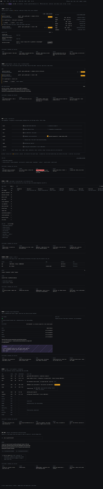
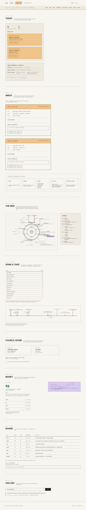
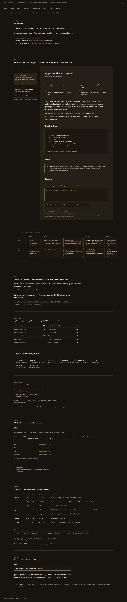
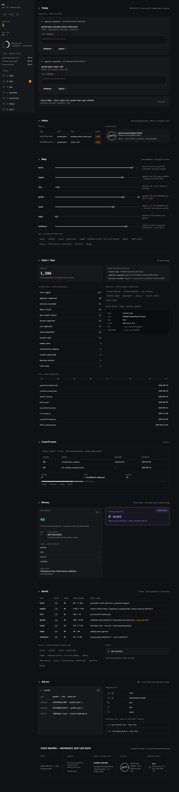

variant-a — command center
One dense keyboard-first surface. No routes; navigation is selection movement. Cold ink monospace.
jurors 1st · 2nd · 1st —
11 pts
· below 2nd by nobody

variant-b — canvas, map-first
The transit Map is home; the company read spatially. Warm paper, cartographic linework.
jurors 2nd · 1st · 3rd —
9 pts
· best rhythm, drawn map

variant-c — review workspace
One approval at full evidence depth; the queue collapses to a rail. Warm serif dossier.
jurors 4th · 4th · 2nd —
5 pts
· deepest single decision

reference — the craft anchor
A Linear-idiom execution of the same brief. Not a competing thesis; the bar the others were ranked against, unlabelled.
jurors 3rd · 3rd · 4th —
5 pts
· inbox arithmetic does not close
